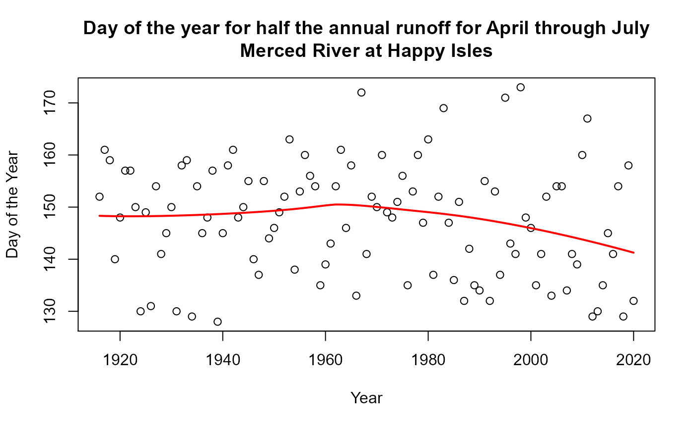

Annual Hydrograph Timing
Robert M. Hirsch
3/16/2021
Source:vignettes/Annual_Hydrograph_Timing.Rmd
Annual_Hydrograph_Timing.RmdA common question in the analysis of the impacts of climate change on hydrology is about shifts in the timing of the annual hydrograph. This is particularly of interest in areas dominated by snowmelt. The new function in EGRET designed to do the necessary data analysis for this is cumQDate. This function identifies the date, in each year, when a specified fraction of the runoff from the watershed has flowed past the streamgage. The analysis can be set up to consider a portion of the year, or the whole year starting in January. A typical version of this analysis would be to consider a snowmelt period that is defined (by the user) as the months of March through June. The function can be set up to determine the first day on which more than half of the total March through June runoff has passed the streamgage. Here is an example for the Merced River near Happy Isles Bridge, Yosemite National Park, California.
library(EGRET)
sta <- "11264500"
INFO <- readNWISInfo(sta, "00060", interactive = FALSE)
Daily <- readNWISDaily(sta, "00060", "1916-01-01", "2020-12-31")## There are 38352 data points, and 38352 days.## Date Q Julian Month
## Min. :1916-01-01 Min. : 0.04248 Min. :24105 Min. : 1.000
## 1st Qu.:1942-04-01 1st Qu.: 0.84951 1st Qu.:33693 1st Qu.: 4.000
## Median :1968-07-01 Median : 2.86000 Median :43280 Median : 7.000
## Mean :1968-07-01 Mean : 10.06120 Mean :43280 Mean : 6.523
## 3rd Qu.:1994-10-01 3rd Qu.: 10.70377 3rd Qu.:52868 3rd Qu.:10.000
## Max. :2020-12-31 Max. :255.70112 Max. :62456 Max. :12.000
##
## Day DecYear MonthSeq waterYear
## Min. : 1.0 Min. :1916 Min. : 793 Min. :1916
## 1st Qu.: 93.0 1st Qu.:1942 1st Qu.:1108 1st Qu.:1942
## Median :184.0 Median :1968 Median :1423 Median :1968
## Mean :183.8 Mean :1968 Mean :1423 Mean :1968
## 3rd Qu.:275.0 3rd Qu.:1995 3rd Qu.:1738 3rd Qu.:1995
## Max. :366.0 Max. :2021 Max. :2052 Max. :2021
##
## Qualifier i LogQ Q7
## Length:38352 Min. : 1 Min. :-3.1588 Min. : 0.05299
## Class :character 1st Qu.: 9589 1st Qu.:-0.1631 1st Qu.: 0.88591
## Mode :character Median :19176 Median : 1.0508 Median : 2.93282
## Mean :19176 Mean : 1.0896 Mean : 10.06269
## 3rd Qu.:28764 3rd Qu.: 2.3706 3rd Qu.: 11.09919
## Max. :38352 Max. : 5.5440 Max. :118.00034
## NA's :6
## Q30
## Min. : 0.06135
## 1st Qu.: 1.02224
## Median : 3.17687
## Mean : 10.06804
## 3rd Qu.: 12.27818
## Max. :100.38322
## NA's :29To call cumQDate we need to specify a fraction of the year for this analysis. In this first case we will use the entire calendar year and the fraction of the runoff we are interested in is half of the annual total.
annualSeriesCal <- cumQdate(eList, paStart = 1, paLong = 12, fract = 0.5)
# let's look at the first 5 rows of the results:
head(annualSeriesCal)## [,1] [,2]
## [1,] 1916 152
## [2,] 1917 162
## [3,] 1918 162
## [4,] 1919 139
## [5,] 1920 150
## [6,] 1921 151
# and let's plot it
plot(annualSeriesCal[,1], annualSeriesCal[,2], xlab = "Year", ylab = "Day of the Year", main = "Day of the year for half the annual runoff\nMerced River at Happy Isles")We can do it again with a different designation of the time span. This time we will only look at the part of the year from April 1 through July 31. In addition, we will fit a loess model to the results and plot that.
annualSeriesMelt <- cumQdate(eList, paStart = 4, paLong = 4, fract = 0.5)
annualSeriesMelt <- data.frame(annualSeriesMelt)
colnames(annualSeriesMelt) <- c("Year", "Day")
loessMod <- loess(Day ~ Year, data = annualSeriesMelt, span = 0.9, control = loess.control(surface = "direct"))
predDay <- predict(loessMod, data.frame(Year = annualSeriesMelt[,1]), se = TRUE)
plot(annualSeriesMelt[,1], annualSeriesMelt[,2], xlab = "Year", ylab = "Day of the Year", main = "Day of the year for half the annual runoff for April through July\nMerced River at Happy Isles")
points(annualSeriesMelt[,1], predDay$fit, type = "l", col = "red", lwd = 2)
# what follows is just a list of the values along the loess curve
predDay$fit## 1 2 3 4 5 6 7 8
## 148.3251 148.2981 148.2764 148.2599 148.2483 148.2413 148.2386 148.2400
## 9 10 11 12 13 14 15 16
## 148.2453 148.2541 148.2661 148.2812 148.2993 148.3201 148.3434 148.3693
## 17 18 19 20 21 22 23 24
## 148.3974 148.4279 148.4605 148.4952 148.5320 148.5709 148.6117 148.6547
## 25 26 27 28 29 30 31 32
## 148.6998 148.7470 148.7966 148.8486 148.9032 148.9606 149.0209 149.0844
## 33 34 35 36 37 38 39 40
## 149.1512 149.2216 149.2960 149.3749 149.4585 149.5475 149.6422 149.7430
## 41 42 43 44 45 46 47 48
## 149.8501 149.9632 150.0812 150.2014 150.3182 150.4220 150.4994 150.4932
## 49 50 51 52 53 54 55 56
## 150.4685 150.4268 150.3687 150.2960 150.2125 150.1227 150.0298 149.9352
## 57 58 59 60 61 62 63 64
## 149.8384 149.7395 149.6375 149.5309 149.4284 149.3284 149.2292 149.1290
## 65 66 67 68 69 70 71 72
## 149.0265 148.9208 148.8110 148.6967 148.5774 148.4529 148.3229 148.1873
## 73 74 75 76 77 78 79 80
## 148.0460 147.8992 147.7469 147.5894 147.4268 147.2593 147.0872 146.9106
## 81 82 83 84 85 86 87 88
## 146.7297 146.5446 146.3555 146.1625 145.9655 145.7646 145.5599 145.3514
## 89 90 91 92 93 94 95 96
## 145.1392 144.9232 144.7036 144.4804 144.2535 144.0231 143.7891 143.5517
## 97 98 99 100 101 102 103 104
## 143.3107 143.0662 142.8180 142.5662 142.3109 142.0520 141.7895 141.5235
## 105
## 141.2539What this graph tells us is that from 1916 to the early 1960’s the day when half of the April - July runoff happened around day 150 (which is May 31). Since the early 1960’s it has been declining such that in 2020 the middle of the runoff is around day 141, which is May 22. So the timing of the half-runoff period has moved up about 9 days from the early 1960’s to the present.